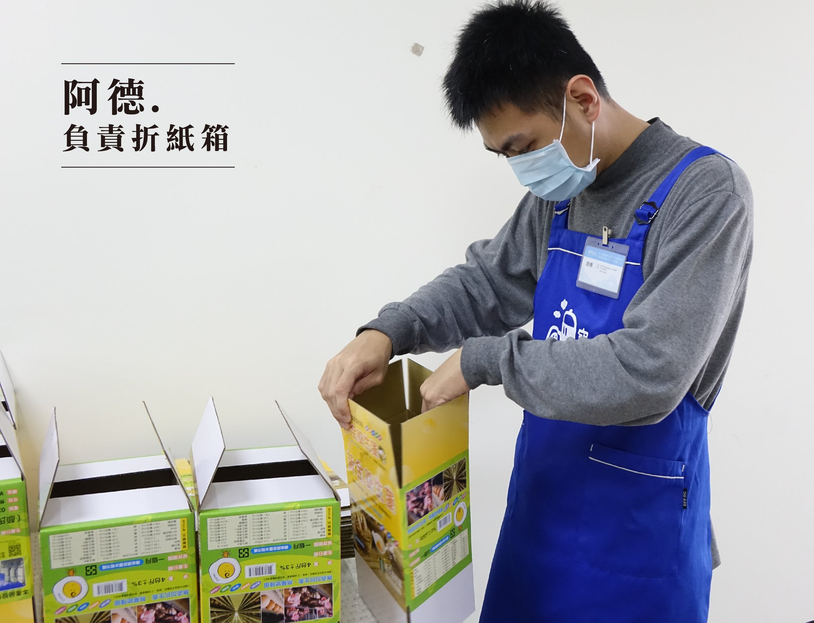
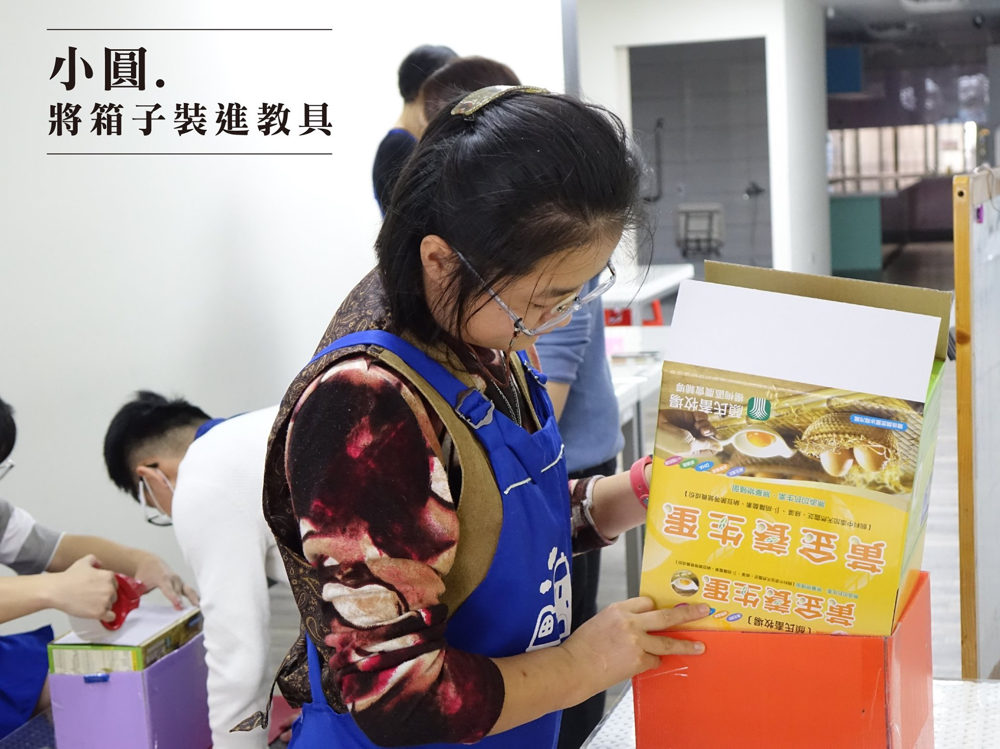
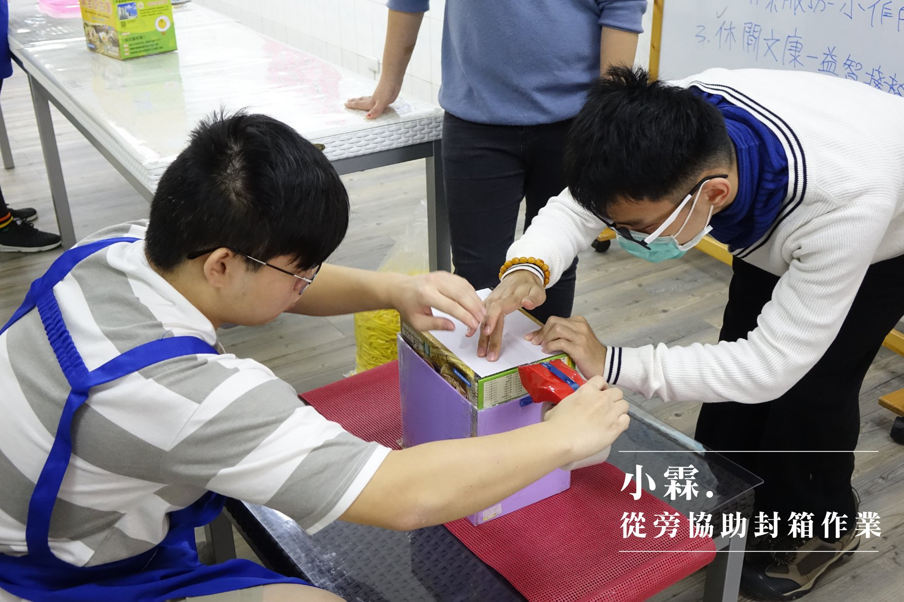
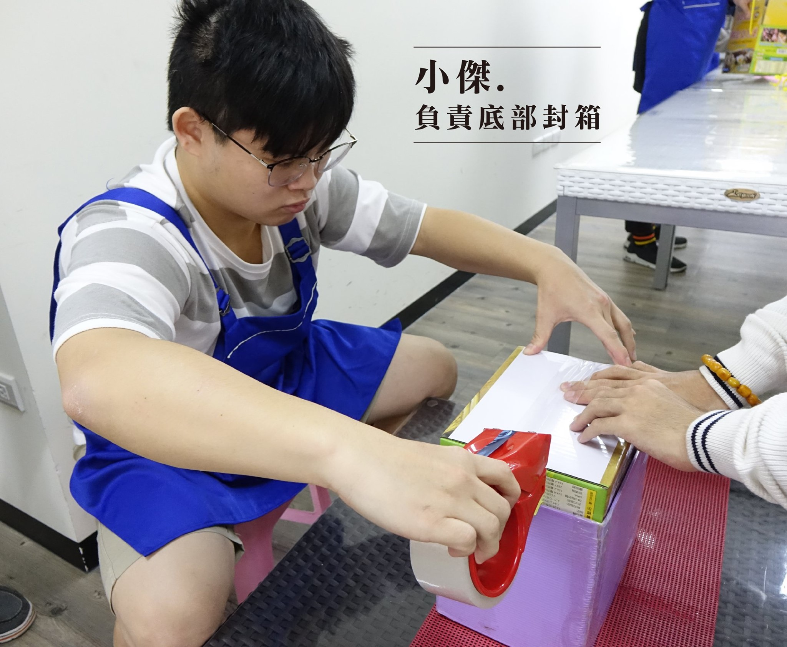
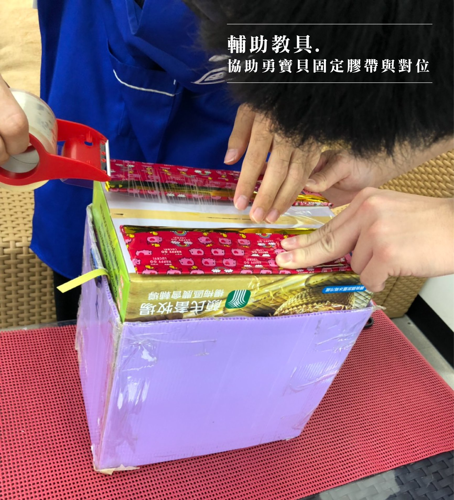
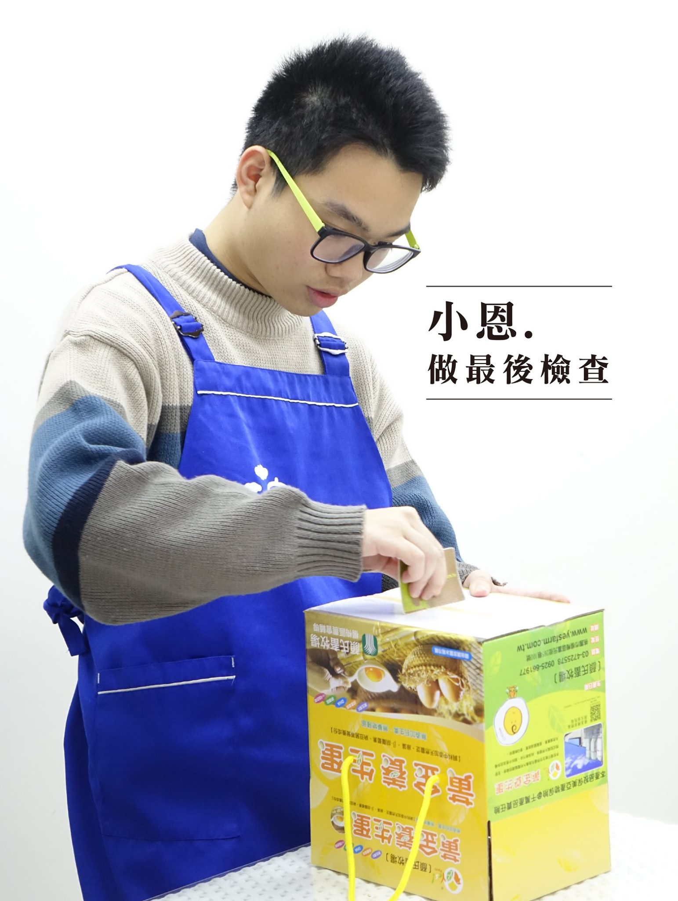

夢想起飛小作所，收托年滿15歲，且領有身心障礙證明之身心障礙者， 我們稱之為「勇寶貝」。勇寶貝們在小作所裡，一天會有四個小時從事作業活動， 作業內容：簡易烹飪、清潔服務及代工包裝。
 
 
 
以上是最近小作所的工作項目之一，由顏氏畜牧場提供工作機會， 製作紙箱代工賺取獎金，步驟大致分為，打開紙箱→底部封箱→穿線→檢查→整齊堆疊。其中封箱是對於他們最大的挑戰， 由於需將底部的兩片紙板對齊平整，並將膠帶直線黏貼， 膠帶台的使用也是問題之一。
經過和社工討論，決定以原先的輔具為基底，再製作出新的輔具， 依舊是讓紙箱套進一個模具，輔助他們工作，一樣有動手學習的機會。